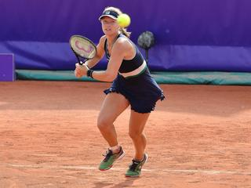
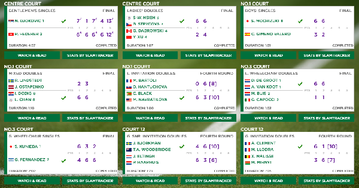

Tennis
Resultaten


"The Wimbledon Championships", populair bekend als "Wimbledon", is de benaming van het oudste tennistoernooi ter wereld. "Wimbledon" is een van de vier grandslamtoernooien, en wordt beschouwd als het meest prestigieuze tennistoernooi ter wereld. Het is tevens het grootste grastennistoernooi en een van de weinige tennistoernooien die spelers verplichten witte kleding te dragen.
Het jaarlijks terugkerende grandslamtoernooi, dat voor het eerst in 1877 werd gespeeld, wordt gehouden op de All England Lawn Tennis and Croquet Club in de Londense buitenwijk Wimbledon. Wimbledon wordt, evenals de drie andere grandslamtoernooien, georganiseerd onder auspiciën van de International Tennis Federation. Aan het hoofdtoernooi doen 128 enkelspelers en 64 dubbelspelkoppels per geslacht mee. Ook zijn er 48 m/v-koppels in het gemengd dubbelspeltoernooi.